E-commerce admin
HM
Manage Products More Easily, Monitor Quicker
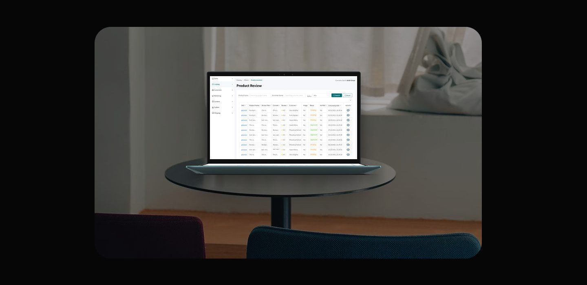
Overview
In this project, the system was developed to simplify the management of product related information and purchase details for administrators. The primary focus is to provide administrators with full control to monitor user feedback, efficiently search for products using filter features, and share purchase details in a practical manner. With these features, it is expected that administrators can maintain product quality while accelerating monitoring processes and internal communication.
Problem
- Admins have difficulty monitoring product quality because they do not have direct access to user reviews.
- The process of searching for products in the database is too time consuming and inefficient,
- Detailed purchase information is difficult to share or document because there is no link copy feature.
Solution
- Provide a feature to display product reviews by users so that admins can monitor feedback in real time.
- Add a filter feature to facilitate product searches based on specific criteria (product name, review, customer, etc.).
- Provide an option to copy links to product purchase details for easy sharing or saving.
My role
In this project, I took on the role of a UX/Ul Designer, responsible for designing an intuitive and efficient admin interface that supports key functionalities such as viewing user product reviews, filtering the product database, and accessing detailed purchase links. My responsibilities included conducting competitive analysis, creating user flows based on admin needs, and translating user stories into user flow, wireframes, and high fidelity design in Figma. Additionally, I ensured that the design maintained consistency, accessibility, and responsiveness across devices to optimize the admin experience.
Process
The design process for this project was divided into four key phases to ensure a user centered and results experience: 1. Discovery During the discovery step, I did a competitor analysis to see how other platforms handle similar features, like review displays, product filters, and purchase details. From there, I found some common pain points, like reviews that aren't very informative or filters that are confusing. I also studied the main users and audience, who are admins who need quick, efficient, and informative access to product data and user feedback. 2. Ideation The ideation process began with designing user flows to illustrate the admin's interaction flow in completing specific tasks, such as filtering products, copying purchase links, and viewing details of products sold. Next, I created a user journey to understand the admin's experience from start to finish when using the system, to ensure that each step felt logical and comfortable. 3. Design Process To keep the appearance consistent and easy to develop, I compiled a design system that included professional and easy to read main colors, clean and responsive typography, and reusable UI components such as buttons, product cards, and input fields. This design system became the visual and interactive basis for the entire admin interface. 4. Usability Testing During the usability testing phase, I created several scenarios and tasks that represent the admin's primary tasks, such as filtering products, copying purchase links, and viewing details of sold products. This testing helped identify obstacles in the usage flow and ensured that the designed solutions are truly easy to understand and use by the target users.
Discovery
Discover and Understanding In the first step, I started by analyzing competitors with similar platforms that have admin features for product management and product reviews. The focus was on how other platforms display reviews, provide filter features, and manage access to purchase details.
Competitor Analysis To understand how popular platforms design admin systems for product management and user reviews, I conducted a competitor analysis of several tools commonly used in the e-Commerce industry. The main focus of this analysis was how each platform displays user reviews, provides product filter features, and allows admins to copy purchase-related information. The results of the analysis revealed various approaches that can be used as references and comparisons, both in terms of feature strengths and potential pain points in the user experience.
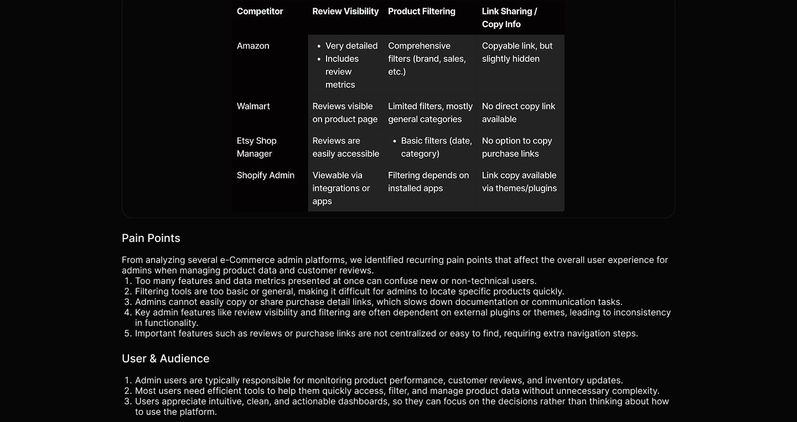
Ideation
After understanding the issues and user needs, I moved on to the ideation phase by creating user flows to map out how admins complete each task in the system, such as accessing product reviews, applying filters, and copying purchase links. This user flow helped ensure that every interaction was efficient and logical. I then developed a user journey to describe the overall experience from the admin's perspective when interacting with these features, including how they navigate between pages, understand the information displayed, and complete their goals without confusion. This stage was important to ensure that the designed solution
User Flow
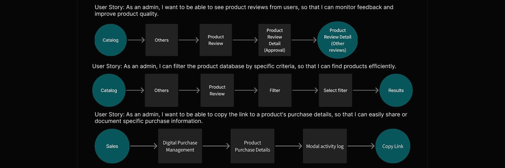
User Journey
The user journey illustrates the typical steps an admin takes when managing product reviews and product data within the dashboard. It highlights the admin's key goals, pain points, and expectations at each stage from accessing user reviews, filtering the product database, to sharing purchase details. Understanding this flow helps pinpoint opportunities to simplify tasks, reduce friction, and improve overall efficiency for admins managing product quality and user feedback.
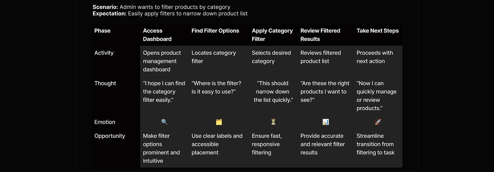
Design system
To maintain visual consistency and ease of future development, I created a design system that serves as a reference for designing the entire interface. I chose professional colors that are not too bold, to support information visibility without distracting the user's focus. Typography was designed for readability, especially for large amounts of text such as reviews or product data. I also created several main components such as buttons, input fields, product cards, and tables, which were designed to be reusable and responsive so they can be easily adapted to various screen sizes. With this design system, every visual element feels consistent, functional, and supports a stable user experience.
Design System
Color
Primary Color
Scurf Green #04747C
Neutral colors
Neutral 700 Neutral 600 Neutra #1B1818 #303133 #3333
Typography
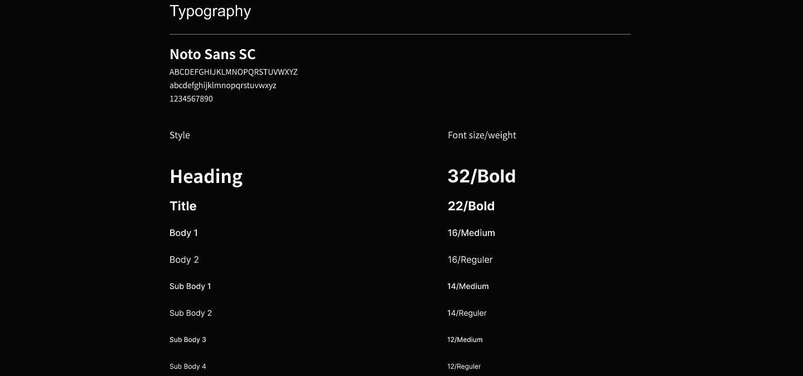
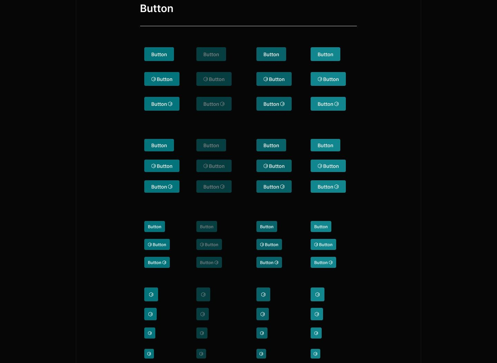
Button
Button Button
© Button @ Button @ Button
Button O Button O Button G
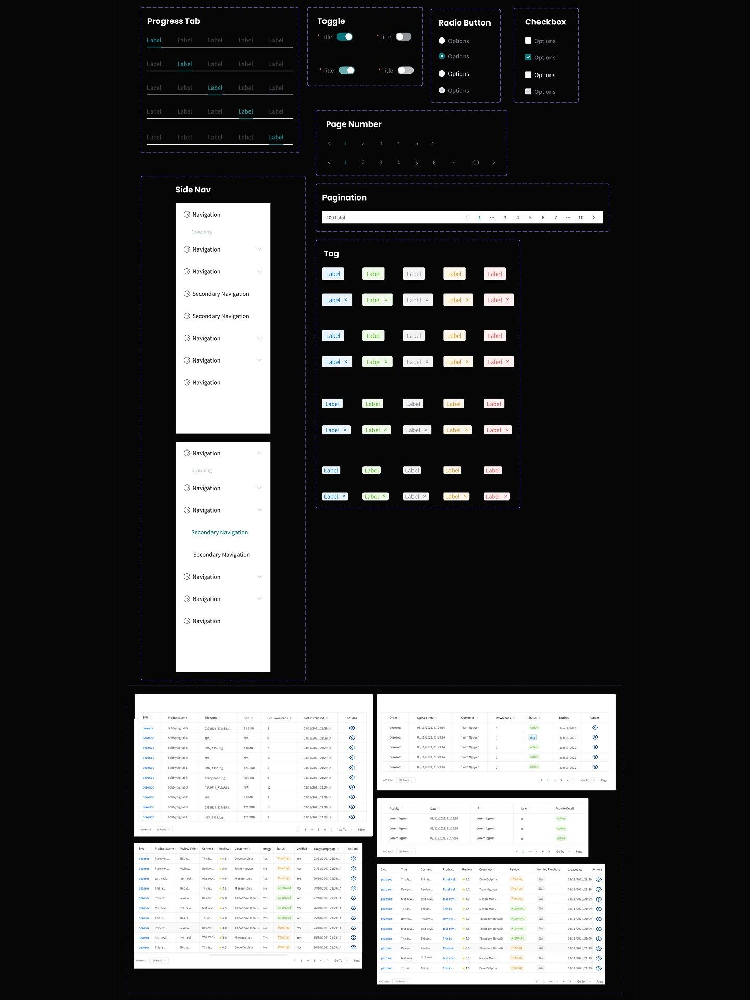
Final design
Product Review Catalog
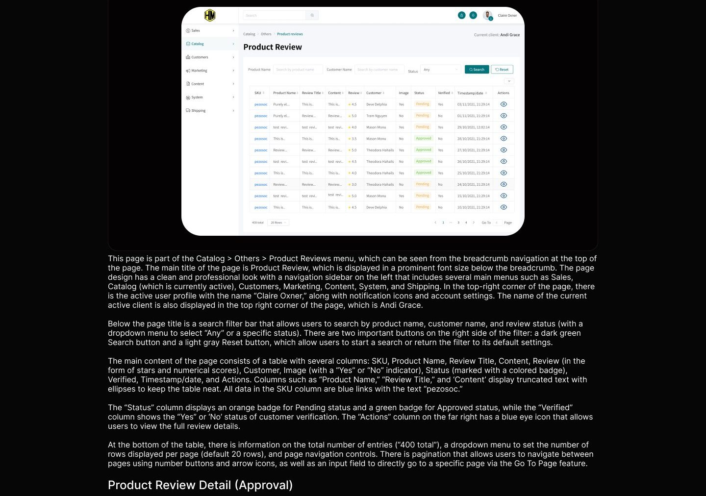
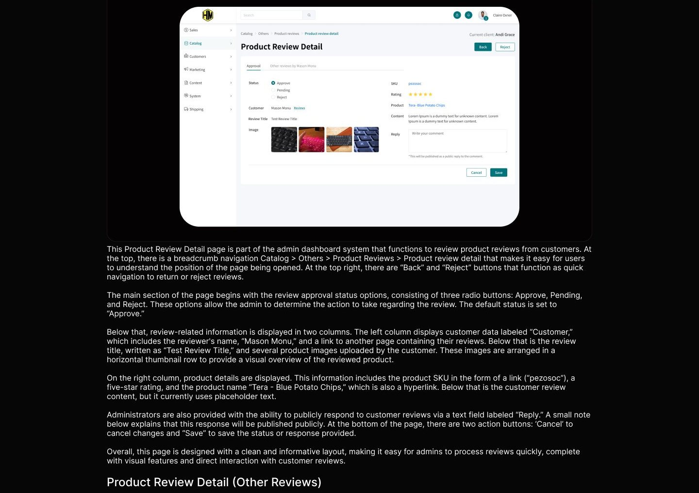
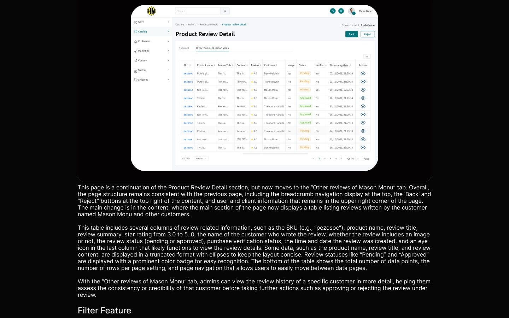
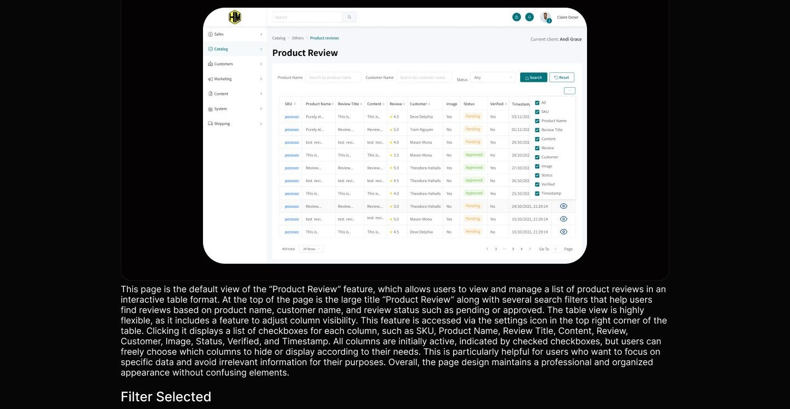
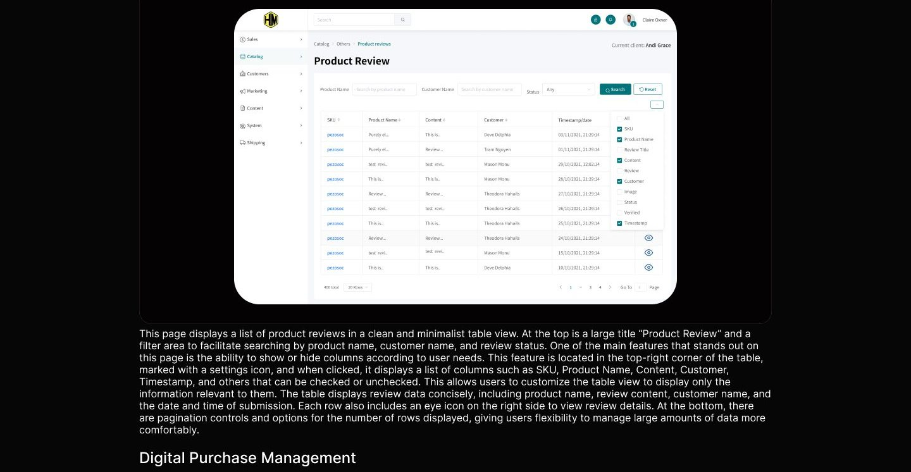
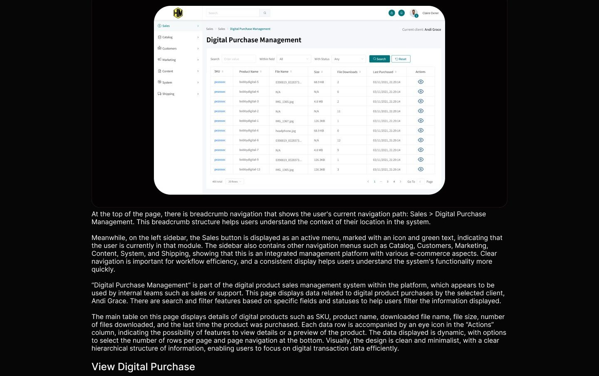
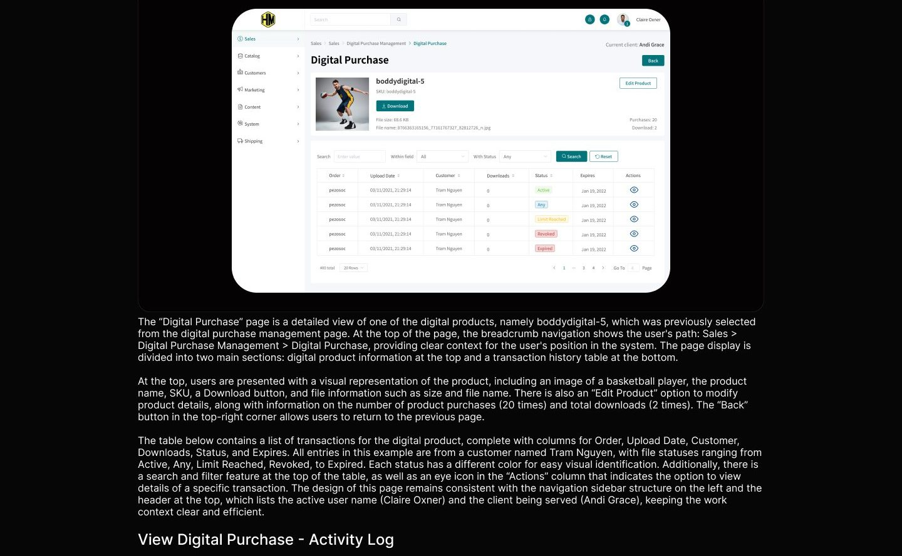
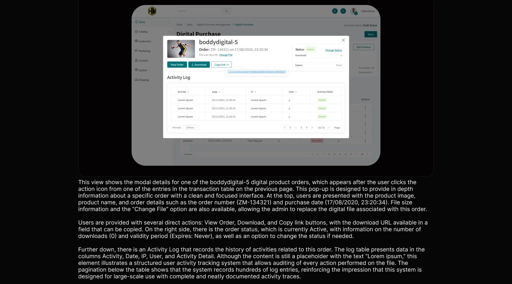
Usability testing
To evaluate the overall effectiveness, ease of use, and user satisfaction levels of the admin platform, I conducted a series of moderated usability testing sessions involving participants who represented the role of user admins. Each session was designed to reflect real-world usage scenarios, in which participants completed a series of goal-based tasks that reflected the workflow of an admin when managing digital content and transactions on the platform. The primary goal of this usability testing was to observe how admins interact with key features, how easily they navigate the interface, and whether design elements such as content structure, button placement, and terminology effectively guide users in completing their tasks. I also want to identify potential usability issues or friction points that could hinder the overall user experience and ensure that the platform supports the needs and expectations of administrators in their work processes. During the testing session, participants were given a series of scenarios such as: searching for buyer reviews, finding products with the highest ratings in a specific category, using filters to select products with specific requirements, sharing information using product links, and checking sales data for several products. These scenarios were designed to explore various aspects of the interface and system interactions from the perspective of both new and experienced admins. By analyzing user behavior, feedback, and performance in completing each task, 1 gained valuable insights to refine the existing design. The findings from this session helped ensure that the product development direction fully supports admin needs, while enhancing efficiency and clarity at every stage of system use. Participants were given the following scenario to complete: 1. You want to see reviews from buyers, how do you do that? 2. You want to find out which products have the highest ratings in a particular category, what should you do? 3. You want to check products based on only a few criteria, so you need a filter for this. How do you do that? 4. You want to share information using product detail links. What can you do? 5. You want to check sales for several products. How do you check them?
Reflection
If I had additional time, I would: 1. Continue the design iteration process through further usability testing using more structured scenarios and task based activities typical of administrators. This approach aims to further validate the information structure, visual clarity, and effectiveness of key interactions such as transaction data access, download status, and digital product navigation. 2. Conduct a comprehensive usability review of the design, focusing on UI element consistency, readability, and workflow simplification to ensure the admin experience remains intuitive and supports their daily workflow efficiency.
Full case study
The complete annotated board lives in Figma, with every flow, wireframe, and screen.